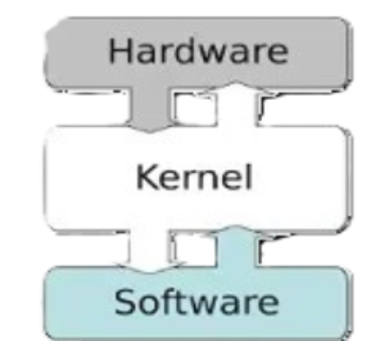

Conceito: O kernel é o núcleo do sistema operacional responsável pelo gerenciamento direto dos recursos de hardware e pela comunicação entre software e hardware.
Kernel
Kernel - Funções Básicas
- Memória: O kernel gerencia a alocação e desalocação de memória para garantir o uso eficiente dos recursos do sistema.
- Processos: Responsável por criar, destruir e gerenciar os processos em execução, garantindo a ordem e o controle das atividades do sistema.
- Dispositivos: Controla a interação entre o software e os dispositivos de hardware, garantindo que os processos tenham acesso aos recursos necessários.
- Arquivos: Gerencia o armazenamento, acesso e manipulação de arquivos no sistema de arquivos, garantindo a integridade e a segurança dos dados.
- CPU: Decide quais processos serão executados e por quanto tempo, utilizando algoritmos de escalonamento para otimizar o desempenho do sistema.
- Segurança: Implementa políticas de segurança para controlar o acesso aos recursos do sistema, garantindo a integridade e a confidencialidade das informações.
- Comunicação: Fornecer mecanismos para que os processos possam se comunicar entre si, facilitando a troca de informações e a coordenação de atividades no sistema.
Curiosidades
- Contribuições: É um dos maiores projetos colaborativos de engenharia de software do mundo, com milhares de desenvolvedores de todo o mundo contribuindo para seu aprimoramento.
- Diversidade: suporta uma ampla variedade de arquiteturas de processadores, desde computadores pessoais até sistemas embarcados e supercomputadores.
- Desempenho : é conhecido por seu desempenho e escalabilidade excepcionais, sendo amplamente utilizado em servidores de grande escala e sistemas críticos.
- Flexibilidade: permite uma grande flexibilidade e customização, permitindo que os desenvolvedores adaptem o kernel às necessidades específicas de seus sistemas e dispositivos.
- Licença de Código Aberto: é distribuído sob os termos da Licença Pública Geral GNU (GNU GPL), uma licença de código aberto que permite que qualquer pessoa modifique e distribua o código-fonte.
- Gerencia o armazenamento e acesso a arquivos: Organiza e controla o armazenamento e acesso a arquivos no sistema de armazenamento, garantindo integridade e segurança dos dados.
- Atualizações: são lançadas regularmente, com atualizações que incluem novos recursos, melhorias de desempenho e correções de segurança.
- Testes: Antes de cada lançamento, o kernel passa por testes extensivos para garantir sua estabilidade e confiabilidade, incluindo testes automatizados e revisões por pares.
Imagens
